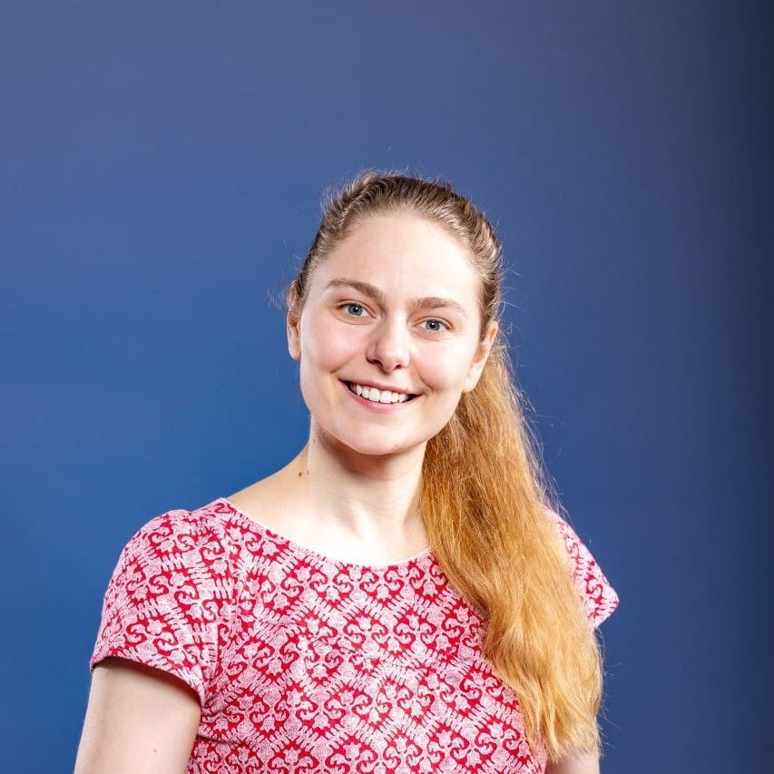

Hybrid Workshop at HRI '27, March 08, 2027, USA
Link to the first edition of this workshop: DTUR Workshop @ HRI 2026
As robots become increasingly autonomous and integrated into everyday human environments, understanding how and why they behave as they do is critical for establishing trust, safety, and effective collaboration. The Designing Transparent and Understandable Robots (D-TUR) workshop aims to bring together researchers interested in improving robot understandability across physical and social contexts of Human–Robot Interaction (HRI).
The workshop will explore design, perception, and evaluation of transparency and understandability in robots—bridging insights from cognitive science, social robotics, machine learning, and human–computer interaction. We encourage participation from both academia and industry, to foster interdisciplinary dialogue on creating robots that communicate intent, uncertainty, and reasoning processes in ways that are intuitive to diverse users.
This workshop will follow a hybrid format, allowing for participation both in-person and remotely. Please stay tuned for details regarding the remote session.
Main Topics of Interest:
We are pleased to introduce our keynote speakers
Dr. Zhao Han is an Assistant Professor at the University of South Florida, where he leads the Reality, Autonomy, and Robot Experience (RARE) Lab. He conducts research at the intersection of human-robot interaction, explainable robotics, and augmented reality. His work focuses on developing capable and understandable robotic systems that communicate efficiently and explain themselves so they fluently collaborate and interact with humans. His research on explainable robotics explores methods for robots to communicate their vision capabilities, past behaviors, and failures through augmented reality, and to generate explanations with behavior trees..
Dr. Silvia Rossi is a full professor of computer science in the Department of Electrical Engineering and Information Technologies at the University of Naples Federico II, where she serves as scientific director of the PRISCA Lab (Projects of Intelligent Robotics and Advanced Cognitive Systems). She earned an M.Sc. in physics from Federico II in 2001 and a Ph.D. in information and communication technologies from the University of Trento in 2006. In 2005, she was a visiting researcher at Oregon Health & Science University’s OGI School of Science & Engineering. Rossi served as a general chair of the 2026 ACM International Conference on Multimodal Interaction (ICMI). At the ACM/IEEE International Conference on Human–Robot Interaction (HRI), she co-chaired the workshops and tutorials in 2019 and the technical track in 2026. She is a program co-chair for HRI 2027. Her research combines cognitive architectures, multimodal perception, and user modeling to develop robots that can interpret social cues, adapt their behavior to people and situations, and communicate their intentions clearly. She has authored or co-authored more than 250 publications. Her work in socially assistive robotics includes multiweek in-home studies with older adults with mild cognitive impairment and research on engagement in pediatric rehabilitation. She co-authored HEXAR, a paper on explaining unexpected robot behavior that won the Best Paper Award on Human–Robot Interaction at the 2026 IEEE International Conference on Robotics and Automation (ICRA). Rossi has contributed to numerous European and Italian research projects, including collaborations with industry partners. She coordinates SWEET (Social Awareness for Service Robots), a Marie Skłodowska-Curie Industrial Doctoral Network, and serves as Federico II’s principal investigator for TRAIL (Transparent, Interpretable Robots), a Marie Skłodowska-Curie Doctoral Network. She previously coordinated PERSEO, a European training network on personalized robotics. Rossi is an IEEE Senior Member. She served as a general chair of IEEE RO-MAN in 2020, 2022, and 2026 and is a general co-chair for the 2027 edition. She has served as an associate editor for IEEE Transactions on Robotics, Pattern Recognition Letters, IEEE Robotics and Automation Letters, and the International Journal of Social Robotics..
Date: March XX, 2027 (Half-day Workshop), Room: XX
Here is the zoom room for online attendees: XX
| 09:30 - 09:35 | Welcome and introduction to the workshop |
| 09:35 - 10:10 | Keynote 1 and Q&A — |
| 10:10 - 10:55 | Paper presentations: |
| 10:55 - 11:10 | Coffee break and networking |
| 11:10 - 11:45 | Keynote 2 and Q&A — |
| 11:45 - 12:30 | Interactive break-out sessions |
| 12:30 - 12:55 | Discussing the break-out session results |
| 12:55 - 13:00 | Concluding remarks |
The interactive break-out sessions will allow workshop participants to discuss their experiences and challenges with making robot behavior understandable in smaller groups. Questions will be provided to focus discussions on open problems. Example questions include:
Further questions will be based on the presented submissions to increase engagement. During the break-out sessions, the organizers of the workshop will actively participate and help guide the discussions when necessary. Online participants will have their own break-out room to make communication easier. We aim to encourage all participants to share their experiences and thoughts, allowing us to discuss open problems from various perspectives. Each group will be asked to summarize the main points of their discussions afterwards in a general discussion with all attendees.
We invite short paper submissions (up to 6 pages) presenting original, ongoing, or position work on transparency, understandability, and explainability in human–robot interaction. Topics of interest include theoretical frameworks, experimental studies, design case studies, and applications related to understandability of robots in physical and social HRI.
The D-TUR workshop will follow a hybrid format, allowing for participation both in-person and remotely. This workshop targets researchers, designers, and practitioners from fields such as Human–Robot Interaction, Explainable AI, Robotics, Cognitive Science, and Human–Computer Interaction. We particularly welcome contributions from interdisciplinary teams interested in both technical and human-centered perspectives on robot understandablity and transparency.
Manuscripts should be written in English and follow the general ACM SIG format ("sigconf", double column format). Manuscripts will undergo a double-blind review, authors should ensure that they anonymize their submissions according to the HRI Anonymization Guidelines. Submissions should be up to 6 pages (excluding references). Accepted papers will be presented as short talks, and will be included on the workshop website.
To accommodate authors aiming for the early-bird HRI registration deadline, we provide two submission tracks: an early track synchronized with the early-bird registration for HRI 2026 and a regular track with a later deadline.
Submission Webstite: OpenReview
In case of questions, please contact: dtur.workshop.hri@gmail.com

KTH Royal Institute of Technology, Sweden
University of Massachusetts Lowell, USA
KTH Royal Institute of Technology, Sweden
King’s College London / Imperial College London, UK
King’s College London / Imperial College London, UK
King’s College London, UK
King’s College London, UK
KTH Royal Institute of Technology, Sweden
KTH Royal Institute of Technology, Sweden
Workshop Contact: dtur.workshop.hri@gmail.com